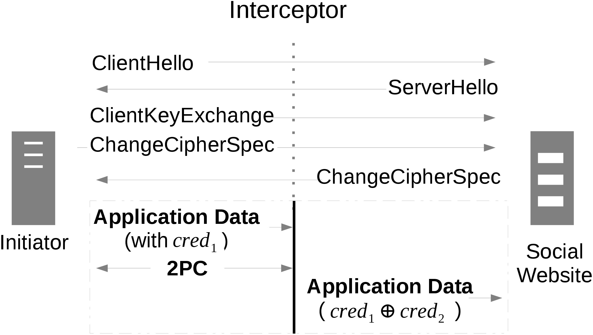

Mailet servers bridge the gap between the social websites and restricted users by utilizing email application. Without installing any software, a confined user can access social websites by sending browsing requests and receiving responses from the websites all in emails. We put emphasis on protecting the credential security of users against potential unsafe servers, and split the crendential and distribute half shares between two servers. By applying secure two-party computation, the two shares are combined in a private way in the POST traffic.
One Mailet server is picked up by the user to be the initiator, which starts the authorization by including cred1 in the POST traffic to the interceptor.
Another Mailet server is chosen as the interceptor, which relay traffic between the initiator and the social website. When seeing the POST traffic, the interceptor interrupts and starts secure two-party computation with the initiator to compute the complete credential in a private way. Finally, the interceptor resumes the POST traffic which now includes the complete credential.